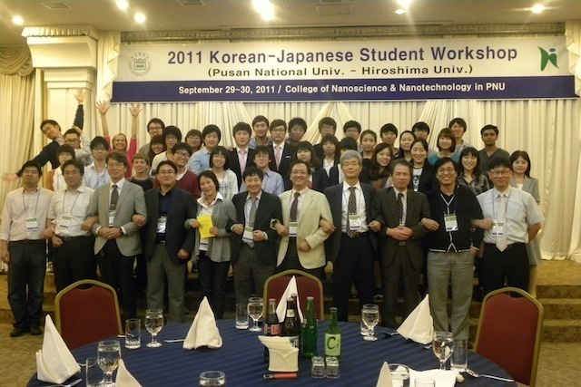

2011 Japan-Korea Student Workshop
9月29日から10月2日にかけて2011 Japan-Korea Student Workshop が韓国の釜山大学で開催されました。光物性研究室から学部四年生の藤川と白井が参加し、英語で口頭発表を行いました。

白井開渡 口頭発表
「 Surface State Evolution upon Fe Deposition of 3D Topological Insulator Bi2Se3 Probed by Angle Resolved Photoemission Spectroscopy 」
藤川和志 口頭発表
「 Synchrotron-radiation Angle-resolved Photoemission Study of an Iron-based Superconductor Ba1-xKxFe2As2 」